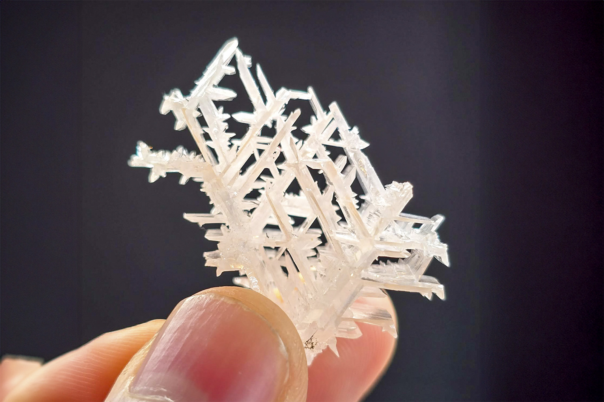

Cerussite
"Snow White Reticulated Cerussite"
V-08741
Nakhlak Mine (Madan-e Nakhlak; Ma'dan-e-Nahlak), Anarak District, Nain County, Isfahan Province, Iran
Purchased 12/16/2025 from Bobby Holley Fine Minerals for $100.00
Core Collection • In Collection
Details
Storage Type: Drawer
Storage Location: C1D1 The First Drawer Miniatures
Size class: TBD (0)
Dimensions: Unrecorded
Mass: Unrecorded
Luster: Unrecorded